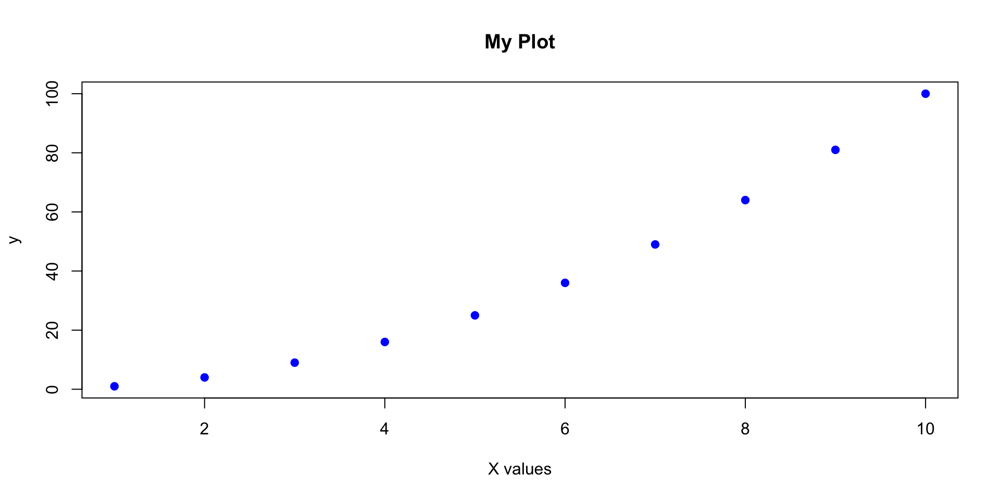

[1] 8[1] 8return() for explicit return (clearer for complex functions)[1] -1.2649111 -0.6324555 0.0000000 0.6324555 1.2649111 NA[1] 8.881784e-17[1] 1...) argument... allows passing additional arguments to functions called within...
Before: repetitive code
Weaknesses:
Especially if the script is longer or more complex than this: - Harder to reuse parts - Difficult to test individual steps - Not always clear what each section does - Variables clutter global environment
Define functions:
# Step 1: Load data
load_raw_data <- function(filepath) {
read.csv(filepath)
}
# Step 2: Clean data
clean_data <- function(data) {
data |>
mutate(
x = ifelse(x < 0, NA, x),
y = log(y + 1)
) |>
filter(complete.cases(data))
}
# Step 3: Fit model
fit_model <- function(data) {
lm(y ~ x, data = data)
}
# Step 4: Create plot
plot_results <- function(data, model) {
ggplot(data, aes(x = x, y = y)) +
geom_point() +
geom_smooth(method = "lm", color = "red")
}calculate_mean_age() not f1()# Good: clear name, single purpose, documented
#' Calculate the coefficient of variation
#'
#' @param x A numeric vector
#' @param na.rm Logical; should missing values be removed?
#' @return The coefficient of variation (sd/mean)
coefficient_of_variation <- function(x, na.rm = TRUE) {
sd(x, na.rm = na.rm) / mean(x, na.rm = na.rm)
}project/
├── data/
│ ├── raw/ # Original, immutable data
│ └── processed/ # Cleaned data
├── R/
│ ├── 01_load.R # Data loading functions
│ ├── 02_clean.R # Data cleaning functions
│ ├── 03_analyze.R # Analysis functions
│ └── 04_visualize.R # Plotting functions
├── reports/
│ └── analysis.qmd # Quarto document
├── output/
│ ├── figures/
│ └── tables/
└── main.R # Main pipeline script# Main analysis pipeline
source("R/01_load.R")
source("R/02_clean.R")
source("R/03_analyze.R")
source("R/04_visualize.R")
# Load data
raw_data <- load_raw_data("data/raw/survey_data.csv")
# Clean data
clean_data <- clean_survey_data(raw_data)
# Analyze
summary_stats <- calculate_summary_statistics(clean_data)
model_results <- fit_regression_model(clean_data)
# Visualize
plot_distribution(clean_data, "age")
plot_regression_results(clean_data, model_results)
# Save results
save_results(summary_stats, "output/tables/summary_stats.csv")
save_plot(last_plot(), "output/figures/regression_plot.png")What is roxygen2?
#'Key tags:
@param: describe arguments@return: describe output@examples: show usageLearn more: roxygen2.r-lib.org
#' Calculate standardized effect size (Cohen's d)
#'
#' @param group1 Numeric vector for group 1
#' @param group2 Numeric vector for group 2
#' @param na.rm Logical; should missing values be removed? Default TRUE
#'
#' @return Numeric value representing Cohen's d effect size
#' @export
#'
#' @examples
#' group_a <- c(10, 12, 14, 16, 18)
#' group_b <- c(15, 17, 19, 21, 23)
#' cohens_d(group_a, group_b)
cohens_d <- function(group1, group2, na.rm = TRUE) {
mean_diff <- mean(group1, na.rm = na.rm) - mean(group2, na.rm = na.rm)
pooled_sd <- sqrt((var(group1, na.rm = na.rm) + var(group2, na.rm = na.rm)) / 2)
return(mean_diff / pooled_sd)
}# BAD: does too many things
analyze_everything <- function(data) {
# 100 lines of code doing loading, cleaning, analyzing, plotting...
}
# GOOD: break into smaller functions
load_data <- function(file) { ... }
clean_data <- function(data) { ... }
analyze_data <- function(data) { ... }
plot_results <- function(results) { ... }